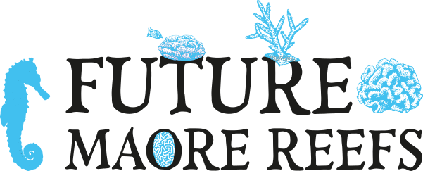

Grâce au plan de relance du gouvernement, l’Institut de recherche pour le développement et le Parc naturel marin de Mayotte, avec l’appui du Centre universitaire de formation et de recherche de Mayotte et l’Université de la Réunion lancent le programme Future Maore Reefs.
Quatre objectifs pour l’avenir de nos récifs !
Les récifs coralliens sont essentiels au maintien de la biodiversité marine et à la protection du littoral. C’est pourquoi ce programme de recherche pour le développement, et d’innovation interdisciplinaire vise :
à mieux comprendre la résilience de ces écosystèmes, face aux changements globaux dont le réchauffement et l’acidification des océans,
à identifier des solutions durables fondées sur la nature pour aider, soit à la restauration d’écosystèmes dégradés, soit à la réduction des impacts liés aux projets d’aménagement ainsi qu’aux pollutions et à l’envasement, ou encore, pour aider à la mise en place de mesures de compensation en cas de destruction de ces écosystèmes,
à mieux comprendre la relation entre la population mahoraise et son environnement marin,
à développer de nouveaux outils et approches de sensibilisation sur les enjeux liés aux récifs coralliens auprès des scolaires et du grand public à Mayotte.